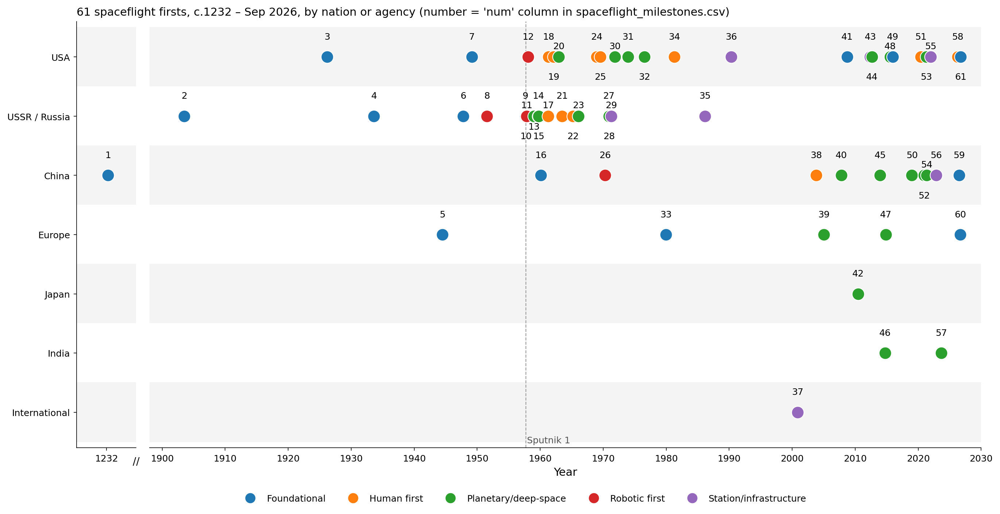
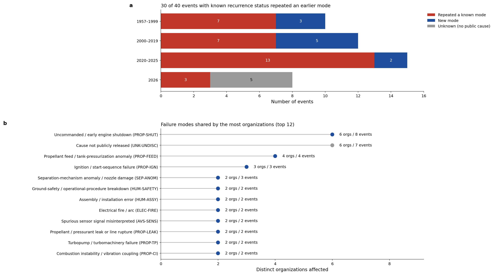
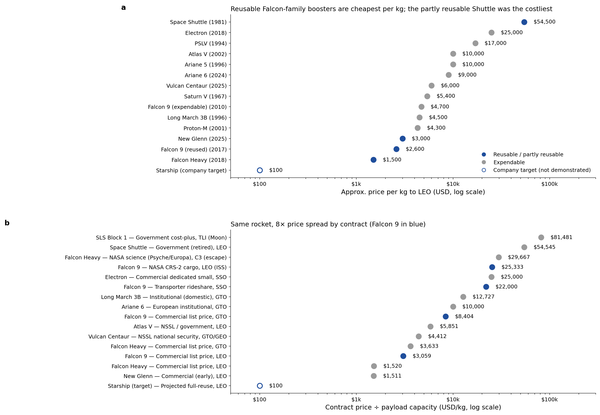
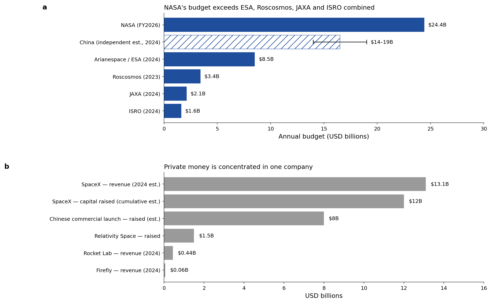
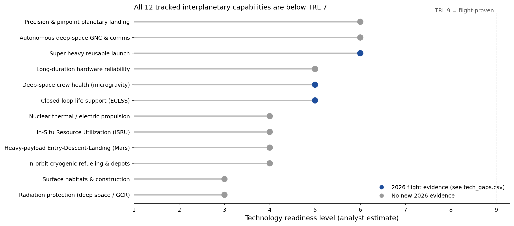

THE OPEN DATA COLLECTION
Every dataset. Every record.
Search across every field in a dataset, filter records, or open a record to read all its details. Estimates and source notes are preserved from the original files.
No matching records. Try another search or reset the filters.
RESEARCH NOTES
The spaceflight report
Scope and sources
Data current to 9 October 2026. Launch counts come from one source throughout: Wikipedia's annual "<year> in spaceflight" summary tables (2010–2025) and the 2026 launch log (launches through 7 October). These totals include Starship flight tests. Other trackers report 324–330 launches for 2025 depending on counting rules (SpaceNews 324, BryceTech 325, McDowell 329, Wikipedia 330).
Values marked estimate, which are cost per kg, technology readiness levels (TRL) and China's space budget, are approximations; every other value is a dated, recorded event. All changes made in this revision are listed in data/changelog.csv and docs/data-changelog.md.
1 · How we got here: 61 spaceflight firsts
spaceflight_milestones.csv lists 61 firsts from c.1232 to September 2026 (USA 23, USSR/Russia 18, China 11, plus Europe, Japan, India and international projects).
- Before 1957: documented Jin-dynasty rocket weapons (c.1232; device details are disputed, and the Wan Hu flight story is legend and excluded), Tsiolkovsky's rocket equation (1903), Goddard's liquid-fuel rocket (1926), GIRD-09, the first Soviet liquid-propellant rocket (17 Aug 1933), the V-2 reaching space (1944), the first Soviet A-4 launches at Kapustin Yar (1947), Bumper 5 staging (1949), and Dezik and Tsygan, the first dogs in space (22 Jul 1951). China's first sounding rocket, T-7M, flew on 19 Feb 1960.
- Correction kept from the earlier review: Gagarin's Vostok 1 (12 Apr 1961) made a single Earth orbit and did not go near the Moon. The first crew to reach lunar vicinity was Apollo 8 (1968).
- 2026 additions: Artemis II (1–11 Apr), the first crewed flight beyond low Earth orbit since 1972 and the farthest humans have travelled from Earth; Long March 10B booster recovered at sea (10 Jul), making China the second country to recover an orbital booster; Isar Spectrum, the first orbital launch from Western European soil (5 Sep); and Starship Flight 14, Starship's first orbital and first commercial flight (28 Sep).

2 · Launch activity 2010–2026
- World orbital launch attempts rose from 74 (2010) to 330 (2025), 4.5×. SpaceX flew 170 (52%) in 2025.
- 2026 to 7 Oct: 239 launches, of which SpaceX flew 116. The USA (142) and China (70) account for 89% (88% in 2025).
- 2026 orbital launch failures: 7 (China 4, USA 1, India 1, Japan 1). The complete 2025–2026 failure list is in
launch_failures_2025_2026.csv(11 + 7 entries).

Organizations: launches 2025 and 2026 to date
| Organization | Vehicle | 2025 | 2026 to date | Reuse | Status |
|---|---|---|---|---|---|
| SpaceX | Falcon 9 / Falcon Heavy | 165 (Falcon 9) | 110 Falcon 9 + 3 Falcon Heavy | Booster+fairing reused (F9) | Operational; >50% of world launches |
| SpaceX | Starship / Super Heavy | 5 suborbital test flights | Flights 12-13 suborbital; Flight 14 (28 Sep) first orbital + first commercial (26 Starlink V3) | Fully reusable design; booster catches demonstrated; first orbital flight 28 Sep 2026 | Flight test; first orbital flight achieved Sep 2026 |
| NASA | SLS (Space Launch System) | 0 | 1 (Artemis II, crewed lunar flyby, 1-11 Apr) | Expendable | Operational; Artemis III re-scoped to LEO demo (late 2027), first landing moved to Artemis IV (2028) |
| Blue Origin | New Glenn | 2 (New Glenn) | 1 (NG-3, payload in wrong orbit, 19 Apr) | First stage reflown (NG-3, 19 Apr 2026) | Grounded: vehicle exploded on LC-36 during static fire, 28 May 2026 |
| Blue Origin | New Shepard | suborbital only | suborbital only | Fully reusable | New Shepard paused for at least two years (announced 30 Jan 2026) |
| ULA | Vulcan Centaur | 6 (5 Atlas V + 1 Vulcan) | 5 (4 Atlas V + 1 Vulcan) | Expendable (SMART reuse planned) | Operational |
| Rocket Lab | Electron | 18 (Electron) | 15 (Electron) | Booster recovery attempts | Operational |
| Rocket Lab | Neutron | 0 | 0 | Reusable first stage | In development (Neutron not yet flown) |
| Arianespace/ESA | Ariane 6 | 7 (4 Ariane 6 + 3 Vega-C) | 6 (4 Ariane 6 + 2 Vega-C) | Expendable | Operational; Ariane 64 debut 12 Feb 2026 |
| ESA | (via Ariane/Vega) | N/A (uses Ariane/Vega) | N/A (procures Ariane/Vega) | Studying reuse (Themis/Prometheus) | Operational programs |
| Roscosmos | Soyuz-2 / Angara | 17 | 13 | Expendable | Operational |
| CNSA | Long March 5 / 5B | 93 (all Chinese launches, 3 failed) | 70 (all Chinese launches, 4 failed) | Expendable | Operational |
| CNSA | Long March 9 | 0 | 0 | Reusable (planned) | In development (super-heavy; not yet flown) |
| CASC / CNSA | Long March 10 / 10A / 10B | 0 | 1 (Long March 10B maiden flight, 10 Jul) | First stage recovered at sea (10B, 10 Jul 2026) | Long March 10A + Mengzhou uncrewed orbital test planned late 2026/2027; abort test 11 Feb 2026 |
| CASC/CASIC + startups | Zhuque-3, Tianlong-3, others | included in China's 93 | included in China's 70; Zhuque-3 booster recovered 18 Aug | Zhuque-3 booster recovered (18 Aug 2026) | Early flight; two Chinese vehicles have now recovered orbital boosters |
| ISRO | LVM3 (GSLV Mk III) | 2 (LVM3) | 0 (LVM3); human-rated HLVM3 Gaganyaan G1 planned Nov 2026 | Expendable | Operational |
| ISRO | PSLV | 1 (PSLV-C61, failed) | 1 (PSLV-C62, failed); next flight C63 planned Nov 2026 | Expendable | Not flown since Jan 2026 failure |
| JAXA | H3 | 4 (3 H3 + 1 H-IIA) | 2 (H3) | Expendable | Operational; H3 returned to flight Jun 2026 |
| Firefly Aerospace | Alpha / MLV | 1 (Alpha, failed) | 1 (Alpha, success, 12 Mar) | Expendable (MLV reuse studies) | Operational; final Block I flown |
| Relativity Space | Terran R | 0 | 0 | Reusable first stage | In development (Terran R not yet flown) |
3 · Failures and post-mortems
failures.csv catalogues 45 failures from 1957 to 2026: 37 notable historical events plus every 2026 orbital failure and the New Glenn pad explosion. Five events killed 96 people: Nedelin (1960, 78), Apollo 1 (1967, 3), Soyuz 1 (1967, 1), Challenger (1986, 7) and Columbia (2003, 7).
- Propulsion is the leading known cause (16 of 45). All 7 events with no public cause date from 2026.
- Fix verification: 18 corrective actions held; 6 did not, meaning the same failure returned on a later flight (Vega VV15→VV17, Astra, Firefly ×2, Starship Flight 7→8, PSLV-C61→C62). 8 vehicles have not flown again since failing.
- New Glenn (28 May 2026): the vehicle exploded during a static fire and severely damaged Launch Complex 36. Blue Origin attributed the cause (5 Aug) to a BE-4 main oxygen valve. This is the third vehicle lost on the ground in a decade, after AMOS-6 (2016) and Starship Ship 36 (2025).

2026 failures
| Date | Event | Operator | Cause category | What happened | Fix held? |
|---|---|---|---|---|---|
| 2026-01-12 | PSLV-C62 / EOS-N1 | ISRO | Undisclosed | Roll-rate deviation near end of third-stage (PS3) burn, just before separation; 15 of 16 payloads lost (KID capsule transmitted data) | Not yet re-flown |
| 2026-01-16 | Long March 3B/E (Shijian 32) | CASC | Undisclosed | Launch failure; Shijian 32 not delivered to geosynchronous orbit. No cause released | Too recent to assess |
| 2026-01-17 | Ceres-2 Y1 (maiden flight) | Galactic Energy | Undisclosed | Maiden flight failed to reach orbit; 6 payloads lost. No cause released | Not yet re-flown |
| 2026-03-05 | KAIROS Flight 3 | Space One | Undisclosed | Flight termination ~70 s after liftoff; third failure in three KAIROS flights (Mar 2024, Dec 2024, Mar 2026) | Not yet re-flown |
| 2026-04-03 | Tianlong-3 Y1 (maiden flight) | Space Pioneer | Undisclosed | Anomaly shortly after liftoff on maiden flight. Precedent: on 30 Jun 2024 a Tianlong-3 first stage broke free of its test stand during a static fire (structural failure) | Not yet re-flown |
| 2026-04-19 | New Glenn NG-3 (BlueBird 7) | Blue Origin | Undisclosed | Upper stage placed BlueBird 7 in a lower-than-planned orbit; satellite could not raise orbit and was deorbited. First flight of a reused New Glenn booster | Not yet re-flown |
| 2026-05-28 | New Glenn static-fire explosion (LC-36) | Blue Origin | Propulsion | Vehicle exploded during static fire; first stage and fuelled second stage destroyed, Launch Complex 36 severely damaged. Cause attributed (5 Aug 2026) to a BE-4 main oxygen valve | Not yet re-flown |
| 2026-08-10 | Long March 7A (ChinaSat-4B) | CASC | Undisclosed | Vehicle disintegrated ~85 s after liftoff, around maximum dynamic pressure; ChinaSat-4B lost | Not yet re-flown |
4 · The learning loop and the OSALR database
- Of the 40 events whose recurrence status is known, 30 (75%) repeated a failure mode seen before. Uncommanded engine shutdown alone has hit 6 organizations in 3 blocs over 56 years.
- The 2026 problem is disclosure, not recurrence: 7 of the 8 failures logged in 2026 have no public cause statement. One was a clear repeat: PSLV-C62 failed in the same third-stage phase as PSLV-C61, and the C62 inquiry report (13 Jun 2026) was not released.
- OSALR (Open Spaceflight Anomaly & Lesson Repository) is a working SQLite database with 45 events, 24 organizations, 36 controlled failure-mode codes (8 classes, including
UNKfor undetermined or undisclosed causes) and fully populated reference and fix-verification tables.build_osalr.pyrebuilds it fromosalr_master.csv. The five worked queries are inquery_demos.md; governance and intake files are included.

5 · Cost per kilogram
- Approximate price per kg to LEO (estimate): Space Shuttle ~$54,500, Falcon 9 reused ~$2,600, Falcon Heavy ~$1,500. Starship's ~$100/kg is a company target and has not been demonstrated.
- Contract terms move the price more than hardware: Falcon 9 ranges from $3,059/kg (commercial, LEO) to $25,333/kg (NASA CRS-2 to the ISS), 8× apart. SLS to trans-lunar injection is $81,481/kg.

6 · Who funds spaceflight
- NASA FY2026: $24.4B. Congress rejected nearly all of a proposed 24% cut in January 2026; the FY2027 request again proposes a 23% cut. For comparison: ESA ~$8.5B (2024), Roscosmos ~$3.4B (2023), JAXA ~$2.1B, ISRO ~$1.6B. China publishes no figure; independent estimates are $14–19B.
- Private funding is concentrated: SpaceX ~$13B revenue (2024 est.), compared with ~$8B raised in total by Chinese commercial launch firms (est.).

7 · Technology gaps for interplanetary flight
All 12 tracked capabilities sit at TRL 3–6 (analyst estimates, not agency assessments). 2026 brought flight evidence for super-heavy reuse (Starship orbital flight; Long March 10B and Zhuque-3 booster recoveries) and for deep-space crew operations (Artemis II). The lowest-readiness items are unchanged: deep-space radiation protection (TRL 3), surface habitats (3), ISRU, Mars entry-descent-landing, nuclear propulsion and cryogenic refuelling (4 each). No ship-to-ship cryogenic propellant transfer had been reported by October 2026.

8 · Next steps
- Code the 8 remaining 2025 failures into OSALR (Spectrum F1, Eris F1, Zhuque-2E Y3, Ceres-1 Y19, Kuaizhou-1A Y33, Hanbit-Nano, Simorgh, Zuljanah). They are already listed in
launch_failures_2025_2026.csv. - Re-check the 8 "not yet re-flown" entries at each return to flight. The next scheduled are PSLV-C63 (Nov 2026) and Astrobotic Griffin-1 (no earlier than Nov 2026); New Glenn has no date yet.
- Request cause disclosures from ISRO, CASC, Space One, Space Pioneer, Galactic Energy and Blue Origin using
osalr_intake_template.csv. EachUNK-UNDISCrecord that gains a cause becomes a usable lesson. - Replace estimates with primary sources: agency-published TRLs, contract-award prices (NASA and NSSL notices) in
cost_model.csv, and official budget documents for ESA, JAXA and ISRO for FY2026. - Q4 2026 watch list: Starship Flight 15, Mengzhou-1 on Long March 10A, Gaganyaan G1 (HLVM3), JAXA MMX (20 Oct), Starliner-1 (Dec).
Downloads
- data/failures.csv — Curated failures 1957–2026 with root cause, lesson, primary reference and fix verification
- data/launch_failures_2025_2026.csv — Every orbital launch logged as a failure in 2025 and 2026 to date
- data/launch_cadence.csv — World and SpaceX orbital launch attempts per year, 2010–2026 (2026 partial)
- data/launch_share.csv — Launches by country/bloc, 2025 and 2026 to date
- data/organizations.csv — Launch providers and agencies: vehicles, launches 2025/2026, reuse status
- data/spaceflight_milestones.csv — Spaceflight firsts c.1232 – 2026
- data/launch_costs.csv — Approximate price per kg to LEO by vehicle (estimates)
- data/cost_model.csv — Contract price ÷ payload capacity, by contract type (estimates)
- data/funding.csv — Government budgets and private revenue/capital (budgets official; private values estimates)
- data/tech_gaps.csv — Readiness of 12 interplanetary capabilities (analyst TRL estimates) with 2026 evidence
- data/changelog.csv — Every edit in the October 2026 revision, with its source
- osalr/osalr.db — SQLite failure database (rebuild with osalr/build_osalr.py)
- osalr/osalr_master.csv — Single source table for the database
- osalr/failure_mode_taxonomy.csv — Controlled failure-mode codes (classes and leaf modes)
- osalr/osalr_events_with_codes.csv — Event index with controlled failure-mode codes
- osalr/failure_db_seed_public.csv — Public failure database records
- osalr/osalr_intake_template.csv — Intake form fields and instructions for submitting an event
- osalr/osalr_schema.sql — SQL schema for the SQLite database
- osalr/failure_db_schema.json — Public failure-record schema
- osalr/osalr_governance.md — Database governance, access tiers and verification rules
- osalr/query_demos.md — Five worked SQL queries and their results
- docs/milestones.md — Full milestone list with categories and significance
- docs/data-changelog.md — Data revision history with sources
- LICENSE — MIT code licence
- LICENSE-DATA.md — CC BY-SA 4.0 data, figure and text licence
Appendix A · All 61 milestones
| # | Date | Milestone | Actor |
|---|---|---|---|
| 1 | 1232 | Earliest documented military rockets (Jin 'fire arrows', siege of Kaifeng) | China (Jin dynasty) |
| 2 | 1903 | Tsiolkovsky rocket equation published | Russia (Imperial) |
| 3 | 1926-03-16 | Goddard's first liquid-fuel rocket | USA |
| 4 | 1933-08-17 | GIRD-09 — first Soviet liquid-propellant rocket | USSR |
| 5 | 1944-06-20 | V-2 (A-4) reaches space | Germany |
| 6 | 1947-10-18 | First Soviet A-4 (V-2) launches, Kapustin Yar | USSR |
| 7 | 1949-02-24 | Bumper 5 — first two-stage liquid rocket to space (393 km) | USA |
| 8 | 1951-07-22 | Dezik & Tsygan — first dogs to fly to space and return | USSR |
| 9 | 1957-08-21 | R-7 Semyorka first successful flight | USSR |
| 10 | 1957-10-04 | Sputnik 1 — first artificial satellite | USSR |
| 11 | 1957-11-03 | Sputnik 2 — first animal in orbit (Laika) | USSR |
| 12 | 1958-01-31 | Explorer 1 — first US satellite | USA |
| 13 | 1959-01-02 | Luna 1 — first Earth-escape / lunar flyby | USSR |
| 14 | 1959-09-13 | Luna 2 — first craft to reach the Moon | USSR |
| 15 | 1959-10-07 | Luna 3 — first images of the lunar far side | USSR |
| 16 | 1960-02-19 | T-7M — first Chinese sounding rocket flight | China |
| 17 | 1961-04-12 | Vostok 1 — Gagarin, first human in space | USSR |
| 18 | 1961-05-05 | Freedom 7 — Alan Shepard, first American in space | USA |
| 19 | 1962-02-20 | Friendship 7 — John Glenn, first American to orbit Earth | USA |
| 20 | 1962-12-14 | Mariner 2 — first successful planetary flyby | USA |
| 21 | 1963-06-16 | Vostok 6 — Tereshkova, first woman in space | USSR |
| 22 | 1965-03-18 | Voskhod 2 — Leonov, first spacewalk | USSR |
| 23 | 1966-02-03 | Luna 9 — first soft landing on the Moon | USSR |
| 24 | 1968-12-21 | Apollo 8 — first humans to the Moon's vicinity | USA |
| 25 | 1969-07-20 | Apollo 11 — first crewed lunar landing | USA |
| 26 | 1970-04-24 | Dong Fang Hong 1 — first Chinese satellite | China |
| 27 | 1970-11-17 | Lunokhod 1 — first roving vehicle on another world | USSR |
| 28 | 1970-12-15 | Venera 7 — first soft landing on another planet | USSR |
| 29 | 1971-04-19 | Salyut 1 — first space station | USSR |
| 30 | 1971-11-14 | Mariner 9 — first spacecraft to orbit another planet | USA |
| 31 | 1973-12-03 | Pioneer 10 — first Jupiter flyby & first through the asteroid belt | USA |
| 32 | 1976-07-20 | Viking 1 — first successful Mars landing | USA |
| 33 | 1979-12-24 | Ariane 1 — first ESA orbital launch | Europe (ESA) |
| 34 | 1981-04-12 | Space Shuttle STS-1 — first reusable crewed spacecraft | USA |
| 35 | 1986-02-20 | Mir — first modular space station | USSR/Russia |
| 36 | 1990-04-24 | Hubble Space Telescope — first of NASA's Great Observatories | USA |
| 37 | 2000-11-02 | ISS Expedition 1 — first permanent crew aboard the ISS | International |
| 38 | 2003-10-15 | Shenzhou 5 — Yang Liwei, first Chinese human spaceflight | China |
| 39 | 2005-01-14 | Huygens — first landing in the outer solar system | Europe (ESA) |
| 40 | 2007-10-24 | Chang'e 1 — first Chinese lunar orbiter | China |
| 41 | 2008-09-28 | Falcon 1 — first privately developed liquid-fuel rocket to orbit | USA |
| 42 | 2010-06-13 | Hayabusa — first asteroid sample return | Japan (JAXA) |
| 43 | 2012-05-25 | Dragon (COTS Demo) — first commercial spacecraft to the ISS | USA |
| 44 | 2012-08-25 | Voyager 1 — first spacecraft to reach interstellar space | USA |
| 45 | 2013-12-14 | Chang'e 3 / Yutu — first Chinese soft landing on Moon | China |
| 46 | 2014-09-24 | Mars Orbiter Mission (Mangalyaan) — Mars orbit on the first attempt | India (ISRO) |
| 47 | 2014-11-12 | Rosetta / Philae — first soft landing on a comet | Europe (ESA) |
| 48 | 2015-07-14 | New Horizons — first Pluto flyby | USA |
| 49 | 2015-12-21 | Falcon 9 — first orbital-class booster landing (first reflight 30 Mar 2017) | USA |
| 50 | 2019-01-03 | Chang'e 4 — first landing on the lunar far side | China |
| 51 | 2020-05-30 | Crew Dragon Demo-2 — first crewed orbital flight by a private company | USA |
| 52 | 2020-12-01 | Chang'e 5 — Chinese lunar sample return | China |
| 53 | 2021-04-19 | Ingenuity — first powered flight on another planet | USA |
| 54 | 2021-05-14 | Tianwen-1 / Zhurong — first Chinese Mars landing | China |
| 55 | 2021-12-25 | James Webb Space Telescope — largest space telescope launched (6.5 m) | USA/Europe |
| 56 | 2022-11-01 | Tiangong — Chinese modular space station complete | China |
| 57 | 2023-08-23 | Chandrayaan-3 — first soft landing near the lunar south pole | India (ISRO) |
| 58 | 2026-04-01 | Artemis II — first crewed flight beyond LEO since 1972; farthest humans from Earth | USA |
| 59 | 2026-07-10 | Long March 10B — first Chinese recovery of an orbital-class booster | China |
| 60 | 2026-09-05 | Isar Spectrum — first orbital launch from Western European soil | Germany |
| 61 | 2026-09-28 | Starship Flight 14 — first orbital Starship flight (26 Starlink V3) | USA |
Appendix B · Edits in this revision (38)
| Dataset | Change | Source |
|---|---|---|
| failures.csv | Removed 'Ariane 5 (retired)' (2023-07-05): final Ariane 5 flight was a success, not a failure | Data audit |
| failures.csv | did_fix_hold blank -> 'N/A (vehicle retired)' for Vanguard TV3 | Data audit |
| failures.csv | did_fix_hold blank -> 'N/A (vehicle retired)' for N1 (all 4 flights) | Data audit |
| failures.csv | did_fix_hold blank -> 'N/A (vehicle retired)' for Astra TROPICS-1 | Data audit |
| failures.csv | did_fix_hold blank -> 'N/A (vehicle retired)' for ABL RS1 Flight 1 | Data audit |
| failures.csv | PSLV-C61 / EOS-09: did_fix_hold -> No | Wikipedia: 2026 in spaceflight + List of spaceflight launches Jan–Dec 2026 (retrieved 2026-10-09) |
| failures.csv | Firefly Alpha FLTA006: did_fix_hold -> Yes | Wikipedia: 2026 in spaceflight + List of spaceflight launches Jan–Dec 2026 (retrieved 2026-10-09) |
| failures.csv | H3 (nav satellite): did_fix_hold -> Yes | Wikipedia: 2026 in spaceflight + List of spaceflight launches Jan–Dec 2026 (retrieved 2026-10-09) |
| failures.csv | SpaceX Starship Ship 36 (static fire): did_fix_hold -> Yes | Wikipedia: 2026 in spaceflight + List of spaceflight launches Jan–Dec 2026 (retrieved 2026-10-09) |
| failures.csv | Peregrine Mission One: did_fix_hold -> Not yet re-flown | Wikipedia: 2026 in spaceflight + List of spaceflight launches Jan–Dec 2026 (retrieved 2026-10-09) |
| failures.csv | Added PSLV-C62 / EOS-N1 (2026-01-12) | Wikipedia: 2026 in spaceflight + List of spaceflight launches Jan–Dec 2026 (retrieved 2026-10-09) |
| failures.csv | Added Long March 3B/E (Shijian 32) (2026-01-16) | Wikipedia: 2026 in spaceflight + List of spaceflight launches Jan–Dec 2026 (retrieved 2026-10-09) |
| failures.csv | Added Ceres-2 Y1 (maiden flight) (2026-01-17) | Wikipedia: 2026 in spaceflight + List of spaceflight launches Jan–Dec 2026 (retrieved 2026-10-09) |
| failures.csv | Added KAIROS Flight 3 (2026-03-05) | Wikipedia: 2026 in spaceflight + List of spaceflight launches Jan–Dec 2026 (retrieved 2026-10-09) |
| failures.csv | Added Tianlong-3 Y1 (maiden flight) (2026-04-03) | Wikipedia: 2026 in spaceflight + List of spaceflight launches Jan–Dec 2026 (retrieved 2026-10-09) |
| failures.csv | Added New Glenn NG-3 (BlueBird 7) (2026-04-19) | Wikipedia: 2026 in spaceflight + List of spaceflight launches Jan–Dec 2026 (retrieved 2026-10-09) |
| failures.csv | Added New Glenn static-fire explosion (LC-36) (2026-05-28) | Wikipedia: 2026 in spaceflight + List of spaceflight launches Jan–Dec 2026 (retrieved 2026-10-09) |
| failures.csv | Added Long March 7A (ChinaSat-4B) (2026-08-10) | Wikipedia: 2026 in spaceflight + List of spaceflight launches Jan–Dec 2026 (retrieved 2026-10-09) |
| launch_failures_2025_2026.csv | New: every orbital launch logged as a launch failure in 2025 (11) and 2026 to date (7) | Wikipedia: 2026 in spaceflight + List of spaceflight launches Jan–Dec 2026 (retrieved 2026-10-09) |
| launch_cadence.csv | Re-based on one source (Wikipedia annual totals, which count Starship flight tests). Global corrections: 2012 78->77, 2017 90->91, 2024 259->261, 2025 341->330. SpaceX corrections: 2010 4->2, 2012 0->2, 2024 134->138 (4 Starship flights had been omitted). Added 2026 YTD (239 / SpaceX 116) | Wikipedia: 2025 in spaceflight + quarterly launch lists (retrieved 2026-10-09) |
| organizations.csv | Replaced approximate counts ('Several', 'A few', '~15-20') with Wikipedia launch-log counts; added orbital_launches_2026_ytd; refreshed status to Oct 2026 | Wikipedia: 2026 in spaceflight + List of spaceflight launches Jan–Dec 2026 (retrieved 2026-10-09) |
| spaceflight_milestones.csv | Voyager 1 dated to crossing the heliopause (2012-08-25), not launch (1977) | NASA/JPL |
| spaceflight_milestones.csv | Falcon 9 2015 entry: 'landing & reuse' -> landing only (reuse was 2017) | SpaceX record |
| spaceflight_milestones.csv | Reworded two subjective labels (Hubble, JWST) to verifiable statements | Data audit |
| spaceflight_milestones.csv | Added Earliest documented military rockets (Jin 'fire arrows', siege of Kaifeng) (1232) | Wikipedia (GIRD, R-1, Dezik and Tsygan, T-7, History of rockets, 2026 in spaceflight) |
| spaceflight_milestones.csv | Added GIRD-09 — first Soviet liquid-propellant rocket (1933-08-17) | Wikipedia (GIRD, R-1, Dezik and Tsygan, T-7, History of rockets, 2026 in spaceflight) |
| spaceflight_milestones.csv | Added First Soviet A-4 (V-2) launches, Kapustin Yar (1947-10-18) | Wikipedia (GIRD, R-1, Dezik and Tsygan, T-7, History of rockets, 2026 in spaceflight) |
| spaceflight_milestones.csv | Added Bumper 5 — first two-stage liquid rocket to space (393 km) (1949-02-24) | Wikipedia (GIRD, R-1, Dezik and Tsygan, T-7, History of rockets, 2026 in spaceflight) |
| spaceflight_milestones.csv | Added Dezik & Tsygan — first dogs to fly to space and return (1951-07-22) | Wikipedia (GIRD, R-1, Dezik and Tsygan, T-7, History of rockets, 2026 in spaceflight) |
| spaceflight_milestones.csv | Added T-7M — first Chinese sounding rocket flight (1960-02-19) | Wikipedia (GIRD, R-1, Dezik and Tsygan, T-7, History of rockets, 2026 in spaceflight) |
| spaceflight_milestones.csv | Added Artemis II — first crewed flight beyond LEO since 1972; farthest humans from Earth (2026-04-01) | Wikipedia (GIRD, R-1, Dezik and Tsygan, T-7, History of rockets, 2026 in spaceflight) |
| spaceflight_milestones.csv | Added Isar Spectrum — first orbital launch from Western European soil (2026-09-05) | Wikipedia (GIRD, R-1, Dezik and Tsygan, T-7, History of rockets, 2026 in spaceflight) |
| spaceflight_milestones.csv | Added Starship Flight 14 — first orbital Starship flight (26 Starlink V3) (2026-09-28) | Wikipedia (GIRD, R-1, Dezik and Tsygan, T-7, History of rockets, 2026 in spaceflight) |
| launch_costs.csv | Starship target $200/kg -> $100/kg to match cost_model.csv (both are the same unproven company target) | Consistency fix |
| funding.csv | NASA 24.9 (FY2024) -> 24.4 (FY2026 appropriation) | Wikipedia: Budget of NASA |
| tech_gaps.csv | Added evidence_2026 and trl_basis columns; TRL values unchanged (estimates) | Wikipedia: 2026 in spaceflight |
| failures.csv | PSLV-C61 reference_type 'published' -> 'publication status unverified' | Data audit |
| organizations.csv | Added Long March 10 row (10B booster recovery); refreshed reuse status for Starship, New Glenn, Zhuque-3 | Wikipedia: 2026 in spaceflight + List of spaceflight launches Jan–Dec 2026 (retrieved 2026-10-09) |